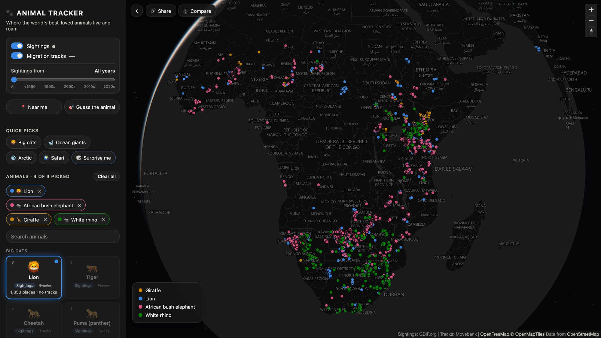

World Animal Tracker
Personal project · Fall 2026
An interactive map of 24 species showing sightings, migration tracks, and conservation status, with a decade time slider, a compare panel, a "near me" finder, and a guess-the-animal quiz. A Python pipeline and a weekly GitHub Actions job refresh the data from GBIF, Movebank, and Wikipedia, with 150+ automated tests checking it before each update.
TypeScript · MapLibre GL JS · Vite · Python · GitHub Actions · Cloudflare